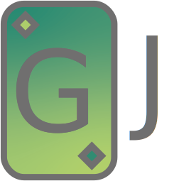

Green Joker
"Green Joker" ist der Name unseres Projekts. Bei dem Projekt handelt es sich um ein interaktives Gruppen-Erlebnis, bei dem sich Gruppen aller Art anmelden können. Im Mittelpunkt des Gruppenspiels steht Klimaschutz und der Spaß, den man mit diesem haben kann.
Mehr erfahren...
">